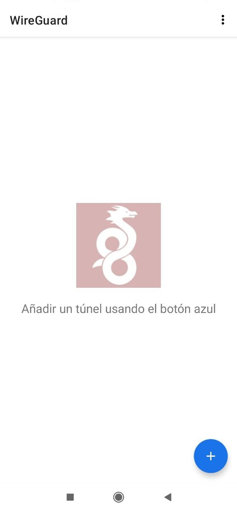

VPN's
Firstly, if you don't know what VPN is, below you can read a little description you can find on the Internet.
A virtual private network, or VPN, is an encrypted connection over the Internet from a device to a network. The encrypted connection helps ensure that sensitive data is safely transmitted. It prevents unauthorized people from eavesdropping on the traffic and allows the user to conduct work remotely.
The main purpose of setting up the VPN access is to let the user safely connect to his DAppNode in case he wants to access it remotely.
DAppNode supports 2 kinds of VPN: OpenVPN and Wireguard. Below you have a little explanation about what explains each section:
- Set up VPN from admin UI: Explain how access to the VPN section and what you can do from this view. (you need to have access to the admin UI).
- OpenVPN: Explain how to set up OpenVPN in dappnode and how to connect your device using an OpenVPN client.
- Wireguard: Explain how to set up wireguard in dappnode and how to connect your device using a wireguard client.
- Set up VPN from DAppNode terminal: Read this section if you want to access via VPN directly, or your machine has not wifi interface.
Set up VPN from admin UI
Firstly, you should go to VPN page, clicking on the VPN tab on the left menu. You sill see a view where you can select 2 tabs: OpenVPN and wireguard.

In case you want to set up openVPN, follow the instruction of OpenVPN. On the other hand, if you wish to use wireguard, click on the tab Wireguard, you will need to install the wireguard package how you see in the below image.

In case you want to set up wireguard, follow the instruction of Wireguard.
OpenVPN
Once you have your DAppNode running, you will get an URL in your terminal from where you can download the OVPN config file and open it in your device with your OpenVPN client.
If you have still not installed your OpenVPN client . Just download the credentials file and follow the instructions.
Opening this OVPN file will configure your VPN connection to your DAppNode from your device. The first device VPN connection will have super admin privileges so you can access and manage the DAppNode admin UI; this user cannot be deleted.
Take into account that some VPN clients might send all traffic through the VPN, which is not very ideal if you have many people connected to your DAppNode, or only to send traffic which points to an ETH domain.
DAppNode is not intended to manage all the traffic of the devices connected to it, only the ETH domains access requests.
⚠️ When you download and install a VPN credentials file, only your ETH traffic will be going out through the VPN, the regular IP traffic will still be done with your regular IP. If you want to route all your Internet traffic through your DAppNode so you are behind your VPN, you should configure it in your VPN client settings by checking the Box "Send all traffic".
These are the recommended Open VPN clients for each OS:
- Mac os: Tunnelblick
- Ios: Open VPN connect
- Windows: Open VPN (community installer)
- Android: Open VPN for Android
- Linux: Already included in recent versions.
Depending on your OS these are the instructions for installing our recommended OpenVPN clients.
!!! info Please note that for the ovpn to be correctly downloaded from the link given you will need to have the TCP port 8092 opened and that the default port to connect via OpenVPN is 1194 UDP. UPnP should have opened them for you if your router has UPnp enabled, if not you will have to open them manually
Linux
Ubuntu / NetworkManager
OpenVPN comes installed in Ubuntu recent versions, but to be sure, follow these steps. Run the terminal application:

Install OpenVPN and plugin for NetworkManager:
sudo apt-get install network-manager-openvpn-gnome openvpn
Once the installation is complete, restart Network Manager by typing:
sudo service network-manager restart
Go to "Settings -> Network" and click to the "+" button to add a VPN connection:

Select "Import from file..."

Browse the filesystem to select the downloaded file:

Add the profile with the default settings:

Now you can connect selecting the profile from the network tray icon:

MacOS
The recommended OpenVPN client is Tunnelblick and you can download it here

Once you have followed the steps to install the tunnelblick client in your MAC, download the file from the URL given in the console to download the OVPN file with your credentials.
If you have already downloaded the config file before installing Tunnelblick, you can select the "I have a config file" option and browse to its location. If not, once you have downloaded the OVPN file, just double click on it and Tunnelblick will add the config for you.
Select your preferred option about the users that will have access to the config.

The system will probably ask for your admin password to install the VPN configuration, and it is done!

Just open Tunnelblick in your MAC and click on Connect DAppNode.

Once connected you can already access http://my.dappnode/ with your new OpenVPN connection!

iOS
The recommended OpenVPN client is OpenVPN Connect and you can download it here

Once you have installed it you can just scan the QR code and hit download:

and click in "Open in OpenVPN"

Tap the add button and name your connection

The phone will ask you permission for OpenVPN to add a configuration profile , please do.
And it is done, you can just connect to your new OpenVPN now


Once connected you can access http://my.dappnode/ with your new OpenVPN connection!
Android
Install OpenVPN for Android from Google Play or F-Droid:

Download the OpenVPN profile from the URL or scanned QR code:

Open the downloaded file and import it to the application, then save it with your preferred name:

Select the saved profile to connect to it:

Accept the connection request:

You should see a connection log similar to this:

Once connected, you should be able to browse the DAppNode Admin page:

Windows
Download the recommended client for OpenVPN WINDOWS INSTALLER (NSIS) and follow the steps to install it:


Download the file from the provided link by the DAppNode administrator.

Run the OpenVPN GUI program:

Select "Import file..." from the tray bar icon (right click):

Select the downloaded file:

Finally, select "Connect" from the tray bar icon menu:

Wireguard
Once you have installed the Wireguard package, you will be able to see this page:

This step is common whatever OS/device you will use as a client. By default, one profile is created, click on the Get link button which is in the column Credentials. Now you can see some configuration text. Keep this window for later, you will need to paste this configuration in the client app you will use as a wireguard client.
Remember if you want to access with more devices, you will need to add more configurations, typing a name and clicking on Add device button.
These are the recommended Open VPN clients for each OS:
- macOS: WireGuard for macOS
- iOS: WireGuard for iOS
- Windows: WireGuard for Windows
- Android: WireGuard for Android
- Linux: WireGuard for Linux
Linux
To use wireguard in ubuntu, you will need to use the terminal in the installation process. Firstly, it is needed to install the prerequisites:
sudo apt install openresolv
Then, you can install Wireguard:
sudo apt install wireguard
Create the configuration file and paste the configuration you have copied before (The configuration text you have obtained on the wireguard tab on dappnode UI):
sudo nano /etc/wireguard/wg0.conf
Finally, type the following command:
sudo wg-quick up wg0
To check you are connected you can do 2 things:
ifconfigand check if there is an interface "new".- Try to access the dappnode UI, if you can access it's ok.
In case you can, type:
sudo wg show
The output of this command should be something like:
~$ sudo wg show interface: wg0 public key: zFhjLJdXrLl86ayX6JpyfN0/rVH+qxgF/e8HxRP9cxk= private key: (hidden) listening port: 51820
peer: OQZWpDPUcNPRZMjncY6BUwsli6HtqgTUn2lAGdXVi2c= endpoint: 173.249.33.176:51820 allowed ips: 172.33.0.0/16 latest handshake: 36 seconds ago transfer: 222.36 KiB received, 81.86 KiB sent
MacOS
Content to be added soon.
iOS
Content to be added soon.
Windows
Content to be added soon.
Android
In your mobile, go to the playstore, then look for wireguard and select this app and install it:

Then, if you open the app you will see the next image:

Click on the blue circle button on the right bottom:

You can obtain the configuration scanning the QR you obtain on the vpn/wireguard view, download the file and import it or copy the contain of the configuration.
Set up VPN from DAppNode terminal
Automatically, after installing DAppNode you should see the next image and a link where can download the credentials.

If it does not happen, you can generate the OpenVPN credentials manually with the command:
dappnode_connect
Using the link you can download the credentials or scanning the QR you can download the credentials on your mobile phone. Once you have downloaded the credentials, you can jump into the OpenVPN section where it is explained how to set up the client in the device you will use to connect via VPN to the dappnode.